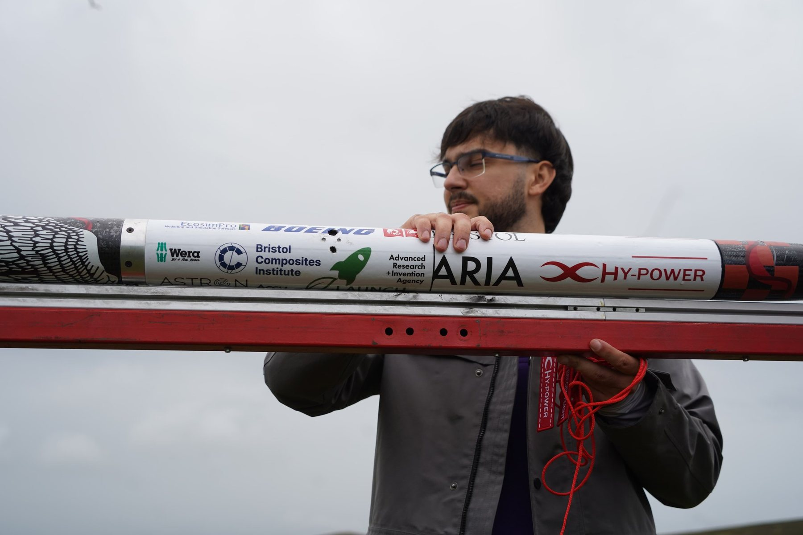
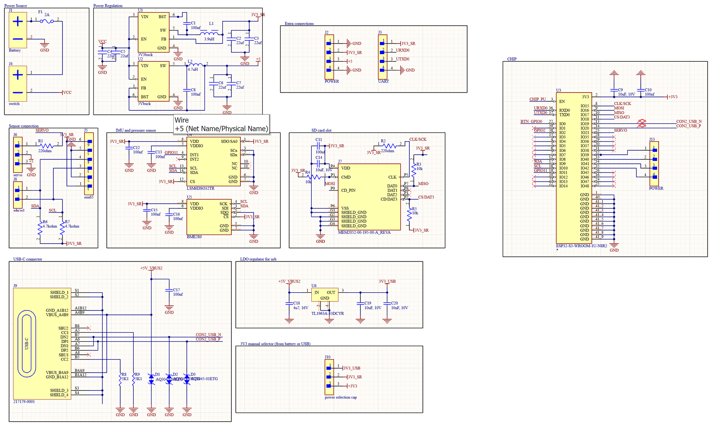
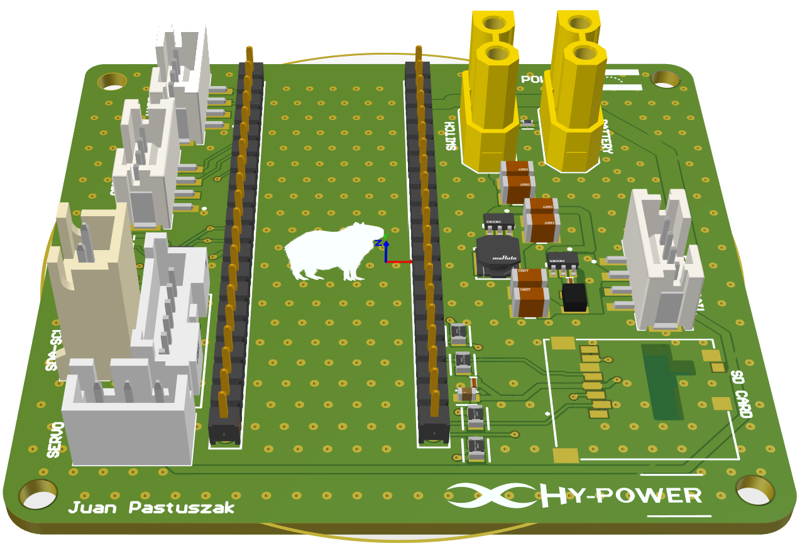
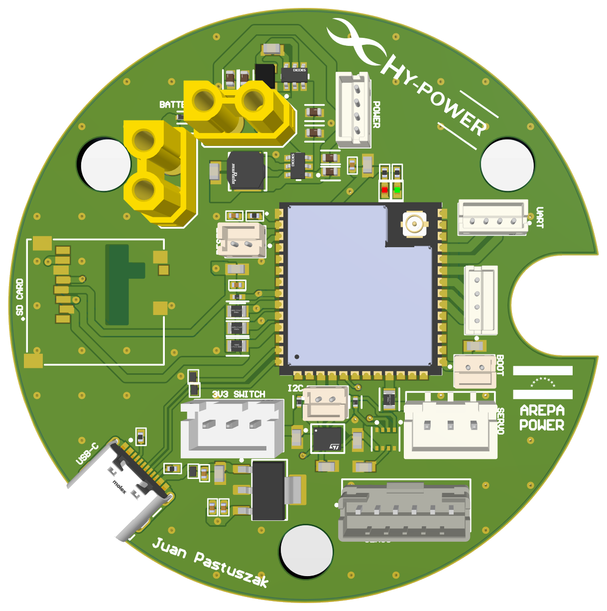
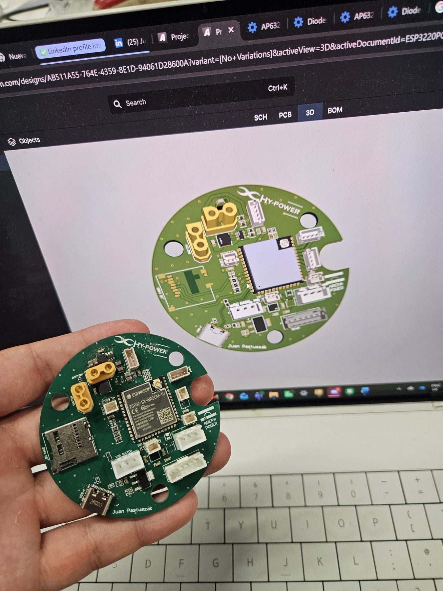
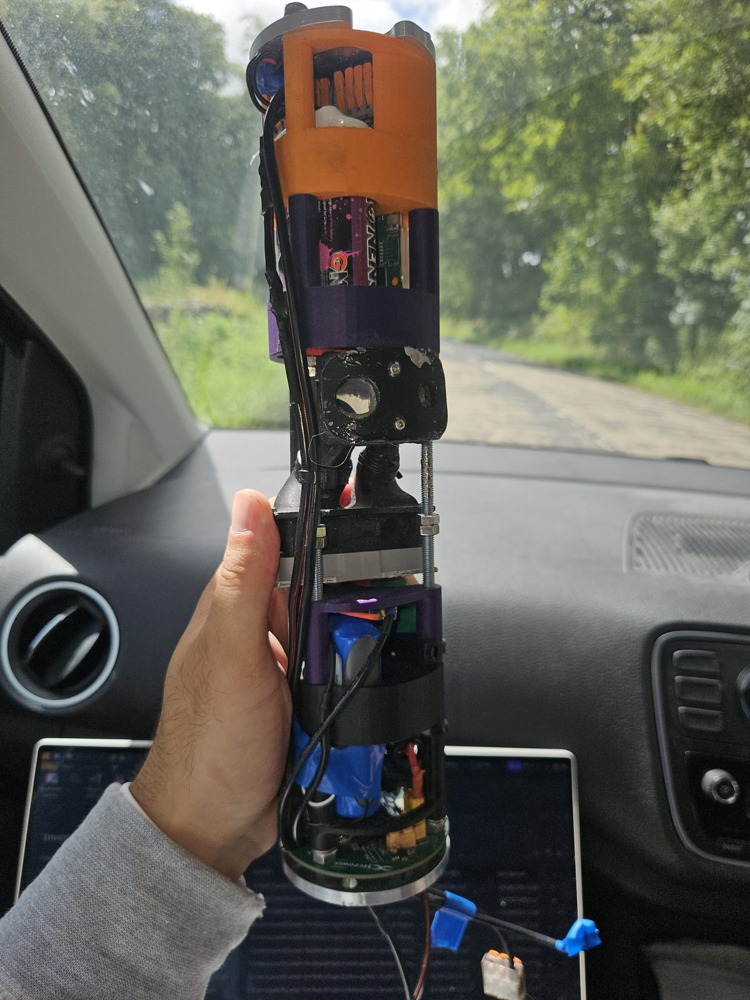
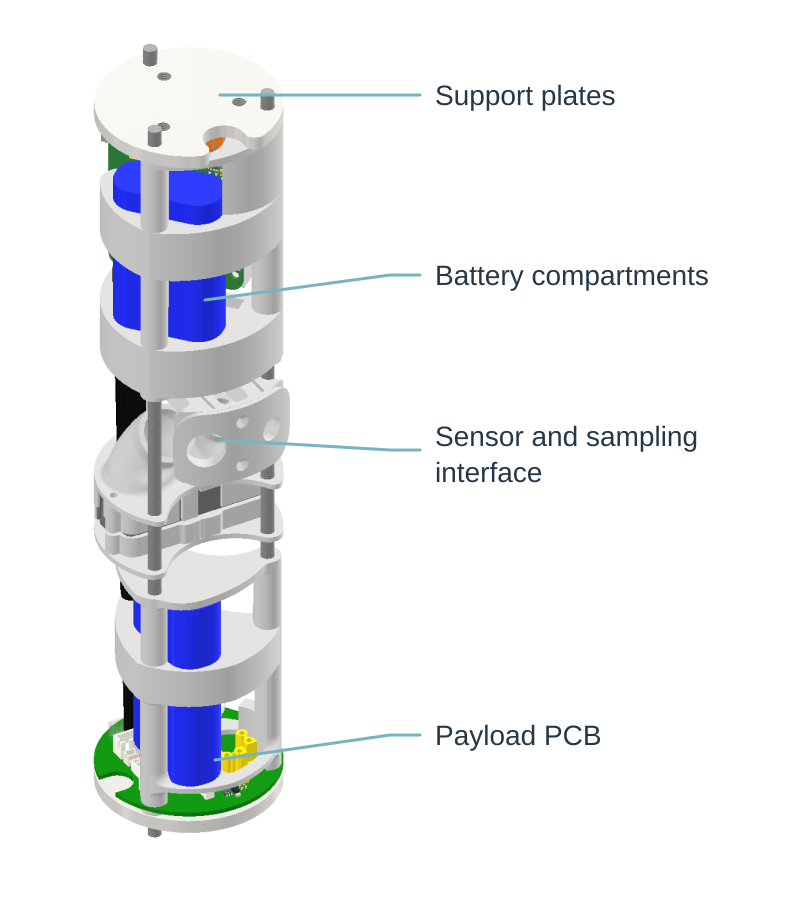
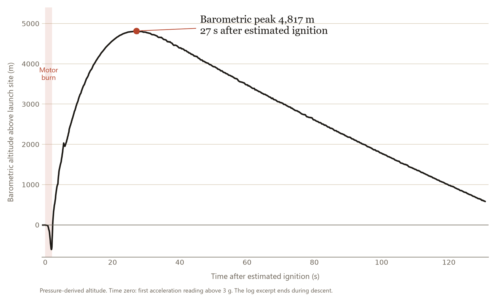
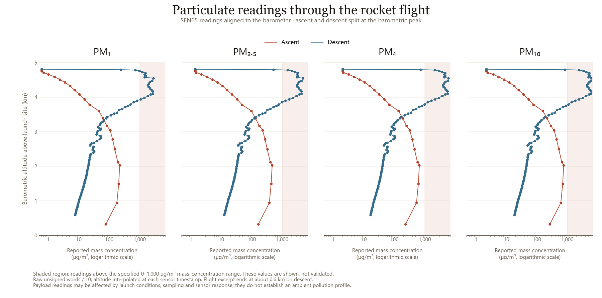
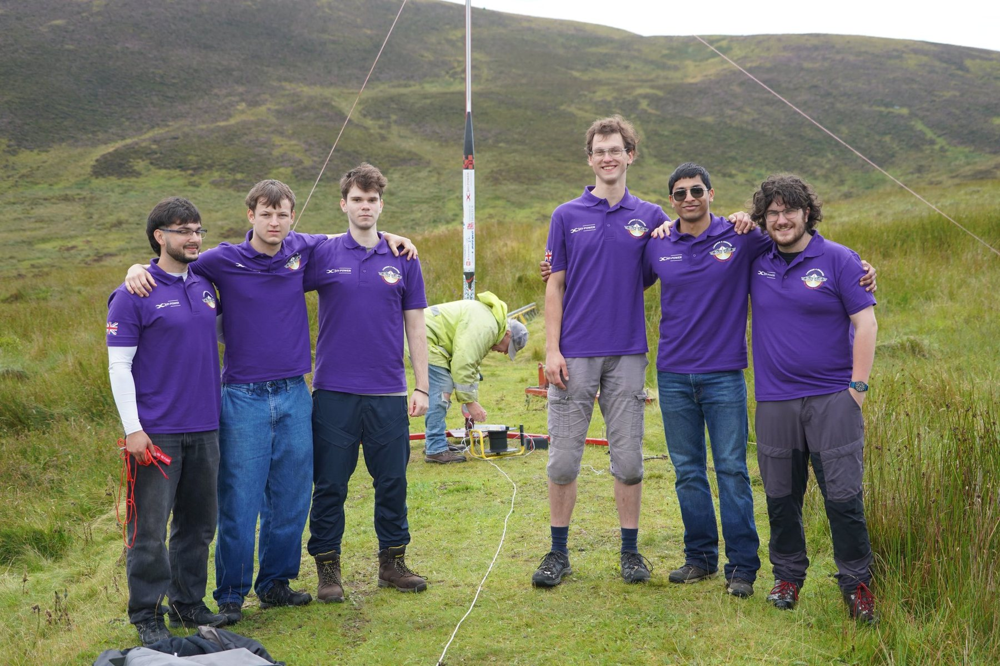

Atmospheric science payload for a university rocket
HyPower Bristol built an atmospheric science payload for its Launch 4 Change rocket. It recorded sensor data during the August 2026 flight, including a barometric peak of about 4.8 km above the launch site.
My contribution
I led the four-person payload team and coordinated its mechanical and electrical interfaces. I designed and assembled the electronics board and wrote the acquisition and logging firmware.
Flew in August 2026

Preparing the HyPower rocket for launch.Photo: Emile Holba / Launch 4 Change
Flight record and payload outcome
HyPower’s highest and fastest flight
Mach 1.5Peak speed from the rocket flight computer, a team result. Launch 4 Change, August 2026.
Altitude peak in my payload log
4,817 mBarometric peak above the launch site, which I found in the payload’s flight log.
Payload integration
3 sensors integratedElectronics and acquisition firmware brought the three sensors together with onboard logging; post-flight review covered altitude and particulate readings.

The payload board schematic in Altium.
Choosing parts for the mission
This was my first PCB design. I took on the electronics to learn the process, using advice from HyPower’s electronics team, Altium tutorials and the reference circuits in the component datasheets. Our electrical lead reviewed my first layout before it was ordered.
The main instrument is a SEN65 particulate-matter and gas sensor, with an IMU and barometer to place each reading in altitude and time, SD storage and power regulation from the rocket’s battery. I chose each part on interfaces and power compatibility.
Several parts were unavailable when I ordered, so I now check supplier stock alongside the datasheet.
From the first board to the flight board
My first iteration was a rectangular carrier board for an ESP32 development board, with connectors for the sensors, battery, switch and SD card.
For the flight board I placed the ESP32-S3 module directly on a round PCB for the payload section, keeping the same functions.

First iteration: a rectangular carrier board for an ESP32 development board.

Second iteration: the round flight board with the ESP32-S3 module on the PCB.
Assembling the board with a hot-air tool and tweezers, shown at 8 to 12× speed. Select the video to play it.
Assembly and bring-up
With the rest of the payload team away, I assembled the board in Bristol alongside the other subteam leads, using tweezers, a soldering iron and a hot-air tool, and checked joints, continuity and power with a magnifier and multimeter.
USB-C would not connect even after I fixed a missing ground connection. I had deliberately left spare ESP32 pins accessible, so I programmed the board through a USB-to-UART adapter instead of ordering a new board.

The assembled board beside its Altium model.
Acquisition, logging and fault handling
I wrote the MicroPython application: I²C sensor drivers, SD logging over SPI, a state machine that detects lift-off from acceleration, and a Wi-Fi dashboard. One main loop services each sensor on its own interval, and the IMU’s FIFO buffer is drained in blocks between slower reads.
If a sensor fails, the firmware reports it and retries every five seconds instead of stopping the mission. On the bench, the board recorded all three sensors and streamed live data over Wi-Fi.
Packaging the payload
The payload had to stay below 66 mm outer diameter. A teammate developed the initial CAD, which I reviewed; I designed parts myself when his exams limited his time, including the sliding mechanism linking the sensor to the external sampling tubes.
I produced the drawings for the university workshop, which machined the parts, using one-sided tolerances on outer diameters and two-sided tolerances on internal holes to protect the envelope.

The integrated payload on the way to the launch, August 2026.

Payload structure and equipment layout: support plates, battery compartments, sensor interface and PCB.
Final assembly
The night before launch, we returned to the laboratory for the final assembly and checks before taking the rocket to the launch site.
Final assembly and checks in the laboratory on the night before launch. Select the video to play it.
Launch
The rocket flew at the Launch 4 Change weekend in Scotland in August 2026. It reached Mach 1.5, the team’s highest and fastest flight, and my payload’s barometer logged a peak of 4,817 m.
The HyPower rocket at launch, August 2026. Select the video to play it.

Barometric altitude from the payload log. Time zero is aligned to the first acceleration reading above 3 g.
Post-flight review: altitude
The barometer shows about 4,800 m above the launch site roughly 27 s after estimated ignition (the first acceleration reading above 3 g). The brief negative excursion during the burn is a pressure effect, not motion.

SEN65 readings against pressure-derived altitude. The shaded region is above the specified 0 to 1,000 µg/m³ range; concentrations use the retained unsigned raw words divided by ten.
Post-flight review: particulate readings
I aligned the SEN65 readings to the barometer timestamps and split ascent from descent at the peak; each point is a reading with interpolated altitude.
The descent readings rise sharply and some exceed the sensor’s specified range. These are measurements under launch conditions, not a validated pollution profile; sampling, sensor response and contamination need checking first.

HyPower Bristol at the launch rail.Photo: Emile Holba / Launch 4 Change
Coordinating payload integration
HyPower Bristol had more than 100 members, around 30 on this rocket. I led our four-person payload team, organised tasks, Gantt charts and weekly meetings, supported teammates on CAD and sensor research, and took the payload through design reviews with the other subteam leads.
Close to launch, a sponsored sensor could not be supplied in time. The electronics lead asked whether we could carry his own flight controller instead, so I revised the CAD and layout to fit it and its long antenna in the same envelope, and it recorded its first flight.
When the sponsored sensor did not arrive, I changed the CAD so the electronics lead’s flight controller and antenna fitted in the same envelope.
What I would develop further
I would revisit the sensor’s air path: inlet and outlet on opposite sides, larger screws and three sliding supports instead of two, prototyped and tested before adopting them.
I would also explore a camera and more sensors, and reserve space from the start for a deployable payload with its own recovery system.